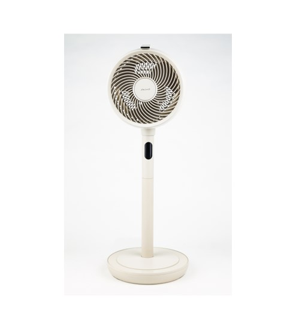
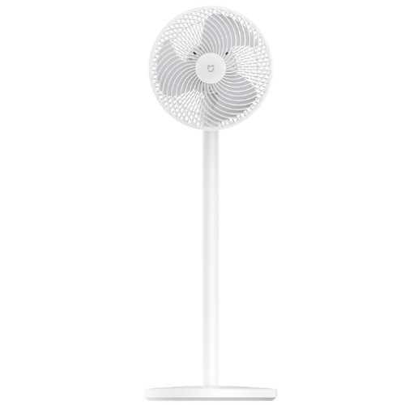
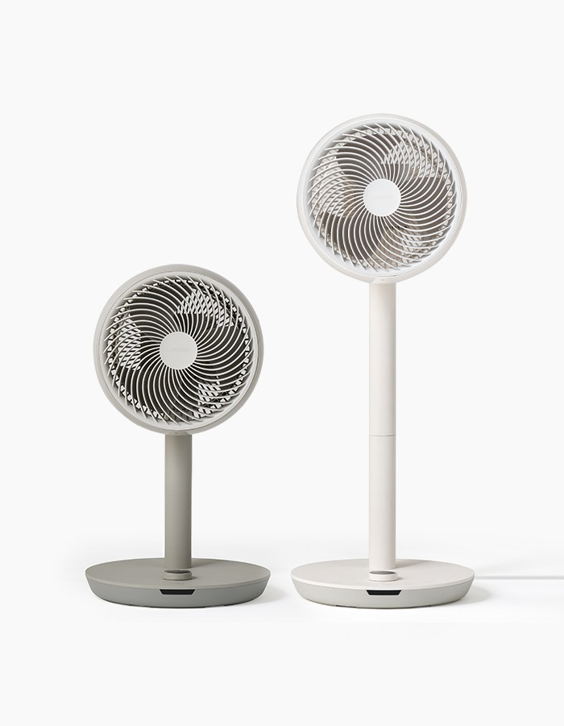
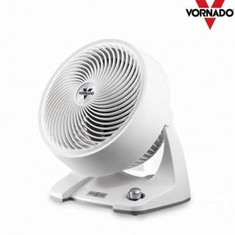

아기 서큘레이터 추천, 조용하고 전기료 적은 BLDC 무소음 4종 비교해봤어요
귤씨 낮잠 재우다가 에어컨만 틀면 너무 춥고, 그렇다고 안 틀자니 땀띠 날까 봐 걱정되고. 이 딜레마 겪어보신 분들 정말 많으실 거예요. 그래서 요즘 육아 커뮤니티마다 빠지지 않고 나오는 게 바로 서큘레이터인데요, 그중에서도 BLDC 모터 서큘레이터가 아기 있는 집 필수템으로 자리 잡은 지 좀 됐죠.
일반 AC모터 선풍기는 낮은 단에서도 "웅~" 소리가 은근히 거슬리는데, BLDC 모터는 브러시 마찰 자체가 없어서 저단으로 갈수록 소음이 확 줄어요. 게다가 전기도 덜 먹어서 밤새 틀어놔도 부담이 적고요. 오늘은 신일 · 샤오미 · 루메나 · 보네이도 이렇게 인기 BLDC 서큘레이터 4종을, 소음·전기료·아기방 실사용 관점에서 나란히 놓고 비교해볼게요. 비교 기준은 소비전력·회전 기능·안전망·타이머·가격대 이렇게 다섯 가지로 잡았습니다.
직바람 안 닿는 자리에 놓고 벽 쪽으로 은은하게 순환만 시켜주는 게 포인트예요.
서큘레이터 고를 때 먼저 알아두면 좋은 것들
제품 하나하나 보기 전에, 아기방 서큘레이터는 일반 거실용이랑 고르는 기준이 좀 달라요. 첫째는 저단 소음이에요. 최고단 풍량이 세도 상관없고, 실제로 밤새 켜두는 1~2단에서 얼마나 조용한지가 진짜 스펙이거든요. 둘째는 직바람 회피. 아기한테 바람이 얼굴로 바로 가면 안 되니까 벽이나 천장으로 바람을 돌릴 수 있는 회전 기능(좌우·상하)이 있는지 봐야 하고요. 셋째는 안전망 촘촘함이에요. 기어다니는 시기 되면 손가락 넣기 딱 좋아서, 그릴 간격이 좁고 안전망이 분리돼서 세척까지 되는지가 중요하더라고요. 넷째는 전기료인데, BLDC라고 다 같은 소비전력이 아니라 모델별로 차이가 있어서 이것도 비교해봤어요.
신일 air S8 SIF-TW80T — 국내 대표 스테디셀러
신일은 국내 서큘레이터 시장에서 가장 오래되고 대중적인 브랜드죠. air S8 SIF-TW80T는 그중에서도 스탠드형 대표 모델로, BLDC 모터에 16단 풍량 조절(초미풍부터 터보풍까지)이 되고 22.5cm 3엽 날개를 달았어요. 좌우회전에 상하각도조절(위로 73도·아래로 17도), 거기다 3D 입체회전까지 되니까 벽 쪽으로 바람을 돌려서 아기한테 직바람 안 가게 세팅하기가 편해요.
내세우는 특징은 역시 내구성이에요. 국내 A/S망이 탄탄하고 오래 써도 잔고장이 적다는 후기가 많고요, 안전망도 앞뒤 모두 분리되는 구조라 물로 씻어서 말리기 좋다는 점도 육아용으로 매력적이에요. 아쉬운 점이라면 최고단 소비전력이 33W로 이 비교군에서 중간 정도라 "초저전력"까지는 아니라는 것, 그리고 소음 데시벨을 제조사가 공식 수치로 공개하지 않고 있어서🔍 공식 소음 dB 확인 필요 정확한 저단 소음값은 아직 확인이 어렵다는 점이에요.
- 👍 국내 브랜드 특유의 탄탄한 내구성 + A/S 편의성
- 👍 안전망 전후면 분리형이라 물세척 간편
- 👍 3D 입체회전으로 벽면 반사 바람 세팅 쉬움
- ⚠️ 공식 소음 dB 미공개 — 실사용 후기 기준 "저단 조용한 편"
- ⚠️ 소비전력 33W는 4종 중 두 번째로 높은 편

신일 특유의 베이지톤 스탠드형, 아기방 인테리어에도 무난하게 어울려요.
이미지: 신일전자 공식 홈페이지
👉 신일 air S8 SIF-TW80T 쿠팡 최저가 보기쿠팡 파트너스 링크 — 발행 시 교체샤오미 미지아 스마트 에어 서큘레이터 6세대 — 가성비 스마트홈형
샤오미 미지아 6세대(모델명 BPLDS06DM)는 가성비와 스마트 기능을 동시에 내세우는 모델이에요. 전용 앱으로 100단 세밀 풍속 조절이 되고, 수면풍·자연풍·에코풍(자동 풍속조절) 모드가 있어서 아기 재울 때 수면풍 모드로 은은하게 틀어두기 좋아요. 좌우회전+상하각도조절+높이조절까지 다 되고, 소비전력은 28W로 이 비교군 4종 중 가장 낮은 편이에요. 전기료 걱정 없이 밤새 틀어두기엔 이쪽이 유리하겠더라고요.
다만 아기방 관점에서는 몇 가지 확인할 게 있어요. 스마트 기능이 와이파이 연결·앱 세팅이 기본 전제라 처음 설정이 조금 번거로울 수 있고, 정품 병행수입/해외구매 유통 비중이 커서 국내 A/S가 신일만큼 촘촘하지 않다는 점은 감안해야 해요. 소음 dB도 공식 수치가 명확히 표기돼 있지 않아서🔍 공식 소음 dB 확인 필요 이 부분은 구매 전 최신 리뷰로 한 번 더 확인하시는 걸 추천드려요.
- 👍 소비전력 28W로 4종 중 가장 낮음 — 전기료 부담 적음
- 👍 앱 100단 세밀 조절 + 수면풍 모드 별도 지원
- 👍 4종 중 가장 낮은 가격대(8~9만원대)
- ⚠️ 와이파이·앱 연동이 기본이라 초기 설정 번거로울 수 있음
- ⚠️ 해외구매 유통 비중 커 국내 A/S는 상대적으로 약함

미니멀한 화이트 톤이라 어느 방에 놔도 튀지 않아요.
이미지: 다나와 가격비교
👉 샤오미 미지아 6세대 쿠팡 최저가 보기쿠팡 파트너스 링크 — 발행 시 교체루메나 FAN GRANDE 2 — 저소음 특화 프리미엄형
루메나는 원래 캠핑 랜턴으로 유명한 브랜드인데, 이 FAN GRANDE 2는 저소음을 정면으로 내세운 프리미엄 서큘레이터예요. 15단 풍속 조절에 좌우 90도 회전(30/60/90도 단계 + 자동회전), 상하는 위로 80도·아래로 10도까지 꺾여서 벽이나 천장 쪽으로 바람을 완전히 돌리기 편해요. 제조사가 표방하는 건 1단 초저소음 기술인데, 1단 기준 하루 10시간 틀어도 월 전기료가 약 47원 수준이라고 밝히고 있어서🔍 제조사 표기 전기료 산정 기준 확인 필요 실사용 조건에 따라 체감은 다를 수 있어요.
안전망·날개·안전망 홀더까지 전부 분리해서 물로 씻을 수 있는 구조라 위생 관리가 수월한 것도 육아용으로 좋은 점이에요. 다만 가격대가 4종 중 가장 높은 편(15만원대 후반)이라 가성비보다는 저소음·세척 편의성에 예산을 더 쓰고 싶은 분께 맞는 선택이에요. 최대 소비전력은 36W로 4종 중 제일 높지만, 이건 최고단 터보 기준이고 아기방에서 실제로 쓰는 1~2단은 소비전력이 훨씬 낮아지는 구조예요.
- 👍 1단 초저소음 기술 — 제조사가 저소음을 핵심 셀링포인트로 내세움
- 👍 안전망·날개 완전 분리형이라 물세척 가능, 위생 관리 편함
- 👍 좌우 90도+상하 80/10도로 회전 범위가 4종 중 가장 넓음
- ⚠️ 4종 중 가격대가 가장 높음
- ⚠️ 최고단 소비전력(36W)은 4종 중 제일 높음(단, 저단 위주 사용 시엔 무관)

키가 큰 스탠드형(베이지)과 낮은 탁상형(그레이) 두 가지로 높이 조절해 쓸 수 있어요.
이미지: 루메나 공식 홈페이지
👉 루메나 FAN GRANDE 2 쿠팡 최저가 보기쿠팡 파트너스 링크 — 발행 시 교체보네이도 633DC — 회전 없이 바람으로만 순환시키는 원조 방식
보네이도는 미국 브랜드인데, 회전 기능이 아예 없는 대신 특유의 볼텍스(vortex) 기류로 방 전체 공기를 순환시키는 게 셀링포인트예요. 633DC는 탁상형 BLDC 모델로 사용 면적 35㎡(약 10평대) 정도를 커버하고, 미세 풍량 조절과 상하각도조절이 됩니다. 촘촘한 전면 그릴 디자인에 쿨터치 기능까지 있어서, 아기가 만져도 뜨겁지 않고 그릴 틈새로 손가락이 잘 안 들어가는 구조라는 게 육아용으로 눈에 띄는 강점이에요.
소비전력은 40W로 이 비교군 4종 중 가장 높은데, 대신 공기이동거리가 길고 순환력이 강해서 넓은 방을 빠르게 돌리는 데는 강점이 있네요. 다만 좌우로 고개를 돌리는 회전 기능 자체가 없고, 타이머·리모컨도 없다는 점은 정직하게 짚고 가야 해요 — 보네이도는 "회전 안 해도 바람이 방 전체를 돈다"는 방식이라 회전이 없는 건 단점이라기보다 다른 설계 철학인데, 아기 침대 방향을 서큘레이터 정면에서 비껴 놓는 배치 감각이 필요하고, 밤에 자동으로 꺼지는 타이머가 없어서 아기방 야간용으론 이 부분을 감안하셔야 해요. 소음은 30~58dB 구간으로 알려져 있는데, 아기방에선 최저단 위주로 쓰게 되겠죠.
- 👍 촘촘한 전면 그릴 + 쿨터치, 아기 손가락 안전 설계
- 👍 회전 없이도 방 전체 공기를 순환시키는 볼텍스 기류 방식 — 순환력 강함
- ⚠️ 좌우회전 기능 자체가 없음(직바람 회피는 배치로 해결해야 함)
- ⚠️ 타이머·리모컨 없음 — 야간 자동 꺼짐이 안 됨
- ⚠️ 소비전력 40W로 4종 중 가장 높음

둥근 원통형 그릴이 특징이라 다른 3종이랑 생김새부터 확 달라요.
이미지: 공기닷컴(보네이도코리아 수입정품)
👉 보네이도 633DC 쿠팡 최저가 보기쿠팡 파트너스 링크 — 발행 시 교체4종 한눈에 비교표
네 제품 다 소개해드렸으니 이제 한눈에 비교할 수 있게 표로 정리해뒀네요. 소비전력·회전기능·안전망·타이머·가격대·추천도(★) 순서로 담았고, 추천도는 아기방 실사용(저단 소음·직바람 회피·안전망) 기준으로 제가 매긴 참고용 점수예요.
| 제품명 | 소비전력 | 회전기능 | 안전망 | 타이머 | 가격대 | 추천도 |
|---|---|---|---|---|---|---|
| 신일 SIF-TW80T | 33W | 좌우+상하+3D | 전후 분리세척 | O | 11~14만원대 | ★★★★☆ |
| 샤오미 미지아 6세대 | 28W | 좌우+상하+높이 | 확인 필요 | O | 8~9만원대 | ★★★★☆ |
| 루메나 FAN GRANDE 2 | 36W(최고단) | 좌우90+상하80/10 | 완전분리 세척 | 1/2/4/8h | 15~19만원대 | ★★★★★ |
| 보네이도 633DC | 40W | 없음(볼텍스 방식) | 촘촘+쿨터치 | X(없음) | 12~14만원대 | ★★★☆☆ |
가격은 작성 시점(2026년 7월) 기준 쿠팡·주요 유통채널 시세 대략치예요, 시기·판매처별로 달라질 수 있어요.
사기 전에 확인해두면 좋은 것 — 안전 체크리스트
제품 스펙표만큼 중요한 게 실제 배치·사용 습관이더라고요. 아무리 좋은 서큘레이터라도 이 부분을 놓치면 의미가 없으니 구매 전에 한 번 체크해보세요.
이런 분께 추천드려요
정답이 딱 하나 있는 건 아니고, 결국 우리 집 예산이랑 아기방 상황에 맞춰 고르는 게 제일이더라고요.
- 전기료를 최우선으로 아끼고 싶다면 → 샤오미 미지아 6세대(28W, 가장 저렴)
- 저소음·세척 편의성에 예산을 더 쓰고 싶다면 → 루메나 FAN GRANDE 2
- 국내 A/S와 내구성이 제일 중요하다면 → 신일 air S8 SIF-TW80T
- 회전 없이도 방 전체를 순환시키는 독특한 기류가 궁금하다면 → 보네이도 633DC(단, 배치에 신경 써야 함)
저희 집은 아직 넷 다 직접 써본 건 아니라서, 이번 여름엔 저단 소음이 관건인 만큼 후기가 꾸준히 쌓이는 제품 위주로 한 번 더 비교해보고 들일 생각이네요. 다들 이 폭염 무사히 넘기시고, 귤씨 같은 우리 아기들 시원하게 재워주는 여름 되면 좋겠습니다.
✔ 아기 여름용품 같이 보기 좋은 내용
(같은 카테고리 기존 발행글의 네이버 post ID를 아직 확인하지 못해 링크는 비워뒀어요 — 발행 시 관련 글 URL 확인 후 연결 예정)